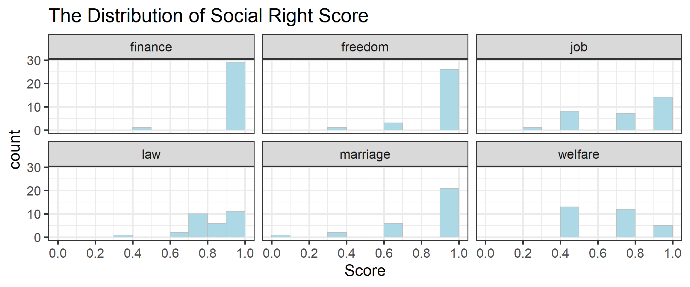
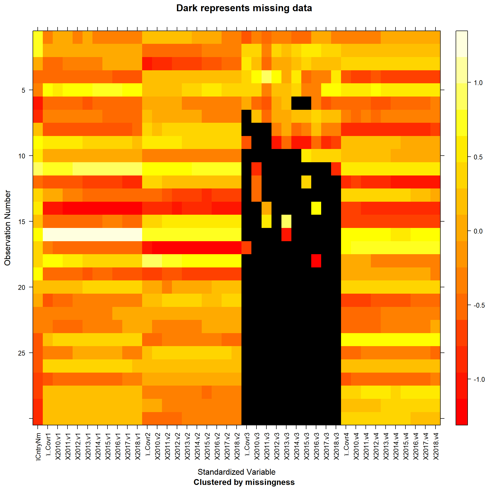
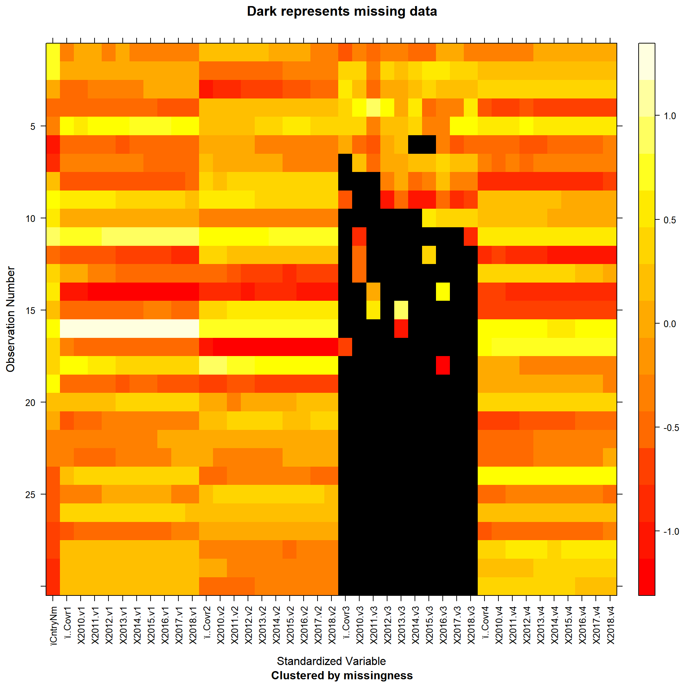

Chapter 5 Results
5.2 Education
5.3 Employment

The figure above for the average employment ratio by sex between 2010-2019 is ordered in descending order by male employment ratio. The purpose of this ordering is to list countries with high male employment ratios first and visualize whether or not the female employment ratios match up. Out of the 30 countries selected for the study, it is very telling that a lower female employment ratio fairly universal. The actual differences between male/female employment ratio varies drastically by country. From the figure above, it is clear that the issue is much more pronounced in countries like Samoa, Mexico, and Malaysia (among others) as opposed to countries like Canada, Congo, Rep., and Iceland. Whether or not the differences between the ratio of male/female employment varies by continent is explored in another figure below.
 The figure above for the average proportion of upper/middle management by sex is ordered in descending order by male upper/middle managers. The purpose of this ordering is to list countries with the biggest discrepancy in male/female manager ratio first, which can serve as a signal for gender discrepancies in employment opportunities. The countries on the figure without data points are countries where there is no data related to this area. These missing countries were kept within the figure to signify the fact that the International Labor Organization was unable to obtain any data related to this issue from numerous countries over a 10-year span. Even without 12 of the 30 randomly selected nations from the study, there appears to be a trend that people in upper/middle management are male the vast majority of the time in almost all countries with the exception of Nicaragua (in the sample). An interesting note is that although Papua New Guinea has a near equal proportion of female employment to male employment, upper/middle managers in that country are over 75% male. On the other hand, Nicaragua has a much higher male employment ratio than female employment ratio, but most upper/middle managers are female.

The Women, Business and the Law Score is an index that analyzes laws and regulations that affect women’s economic inclusion in 190 economies. It is composed of eight indicators revolving around women’s interactions with the law as they progress through their careers and make economic decisions. The eight indicators are: mobility, workplace, pay, marriage, parenthood, entrepreneurship, assets, and pension. The index ranges from 1-100 with 100 being the highest score, or equal legal rights with men in measured areas.
The figure above for the average proportion of upper/middle management by sex is ordered in descending order by male upper/middle managers. The purpose of this ordering is to list countries with the biggest discrepancy in male/female manager ratio first, which can serve as a signal for gender discrepancies in employment opportunities. The countries on the figure without data points are countries where there is no data related to this area. These missing countries were kept within the figure to signify the fact that the International Labor Organization was unable to obtain any data related to this issue from numerous countries over a 10-year span. Even without 12 of the 30 randomly selected nations from the study, there appears to be a trend that people in upper/middle management are male the vast majority of the time in almost all countries with the exception of Nicaragua (in the sample). An interesting note is that although Papua New Guinea has a near equal proportion of female employment to male employment, upper/middle managers in that country are over 75% male. On the other hand, Nicaragua has a much higher male employment ratio than female employment ratio, but most upper/middle managers are female.

The Women, Business and the Law Score is an index that analyzes laws and regulations that affect women’s economic inclusion in 190 economies. It is composed of eight indicators revolving around women’s interactions with the law as they progress through their careers and make economic decisions. The eight indicators are: mobility, workplace, pay, marriage, parenthood, entrepreneurship, assets, and pension. The index ranges from 1-100 with 100 being the highest score, or equal legal rights with men in measured areas.
The figure above displays the Women, Business and the Law index scores over a 30-year period faceted by continent with 5 countries per continent. The figure indicates a universal trend upwards in the index score over nearly all countries in every continent, although the degree of improvement varies drastically. For example, countries like the Congo, Rep. saw no improvement since 1900 and Papua New Guinea saw very marginal improvements, whereas countries like Brazil and Lithuania saw drastic improvements over the same time frame. It is very uncommon for the index score to go downwards once it has gone up, although it has happened on occasions like in 2004 for Lithuania, 2014 in Ukraine, and 2008 in China. A significant marker for gender inequality in employment is that only 2 of the 30 selected countries ever achieved a score of 100, signifying equal legal rights with men in the measured areas of the index. Although women’s legal rights in the eight indicator areas have improved worldwide since 1990, there are very few countries where equality is achieved as of now.
The figure above displays the ratio of female to male employment ratio vs. GDP on a log scale for each country color coded by continent. There appears to no correlation overall between a country’s female/male labor force participation rate to the country’s GDP as the data points are scattered throughout as opposed to group along a linear line. However, when looking at individual continents separately, female/male labor force participation rate does seem correlated with GDP in continents like Europe, Africa, and North America (trend is not really observable for Asia, Oceania, and South America). This suggests that the correlation between female/male employment ratio may have a lot to do with geographical location of the country, and depending on the location, the ratio may be correlated with GDP.
5.1 Social